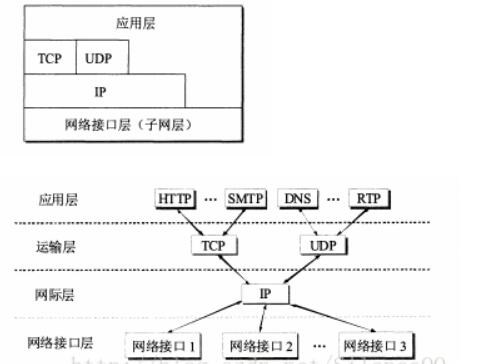
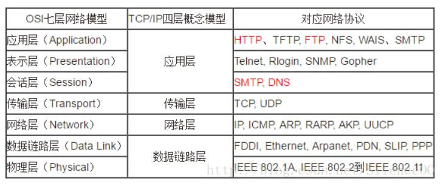
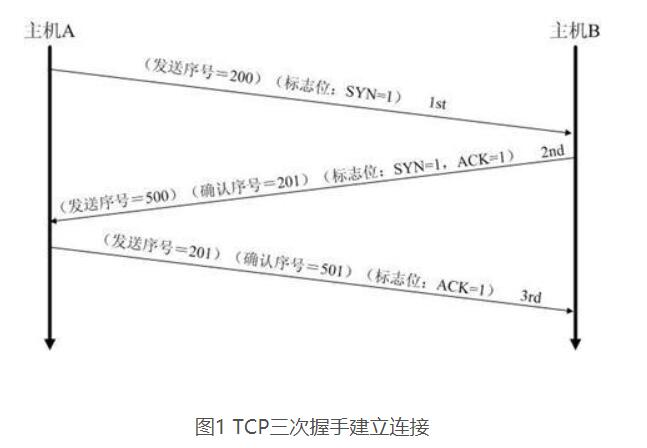
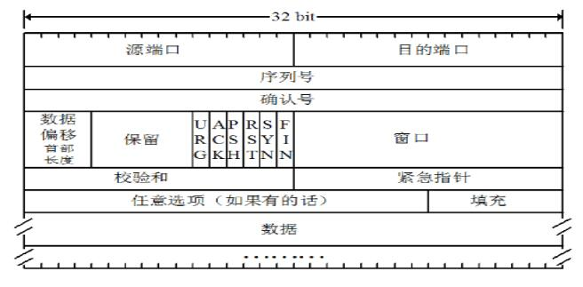
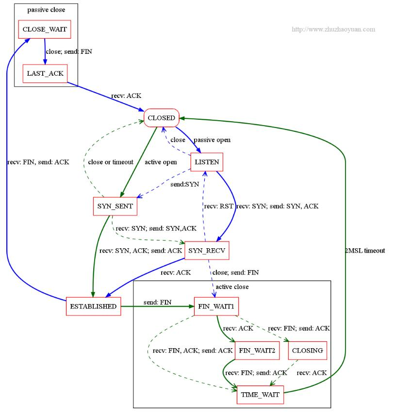
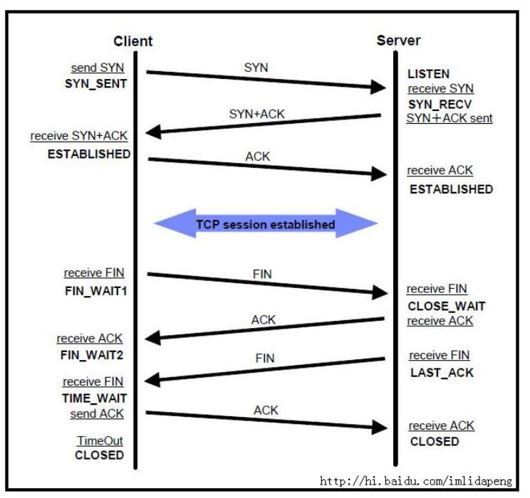

计算机网络
OSI七层协议
- OSI七层协议模型主要是：应用层（Application）、表示层（Presentation）、会话层（Session）、传输层（Transport）、网络层（Network）、数据链路层（Data Link）、物理层（Physical）
TCP/IP四层模型
- 主要包括应用层、传输层、网际层、网络接口层，从实际上讲，网络接口层没有什么具体的内容

五层体系结构
- 主要包括：应用层、运输层、网络层、数据链路层和物理层。五层协议只是OSI和TCP/IP的综合，实际应用还是TCP/IP的四层结构。为了方便可以把下两层称为网络接口层。

每层具体作用：
1.物理层：
主要定义物理设备标准，如网线的接口类型、光纤的接口类型、各种传输介质的传输速率等。它的主要作用是传输比特流（就是由1、0转化为电流强弱来进行传输,到达目的地后在转化为1、0，也就是我们常说的数模转换与模数转换）。这一层的数据叫做比特。
2.数据链路层：
定义了如何让格式化数据以进行传输，以及如何让控制对物理介质的访问。这一层通常还提供错误检测和纠正，以确保数据的可靠传输。
3.网络层：
在位于不同地理位置的网络中的两个主机系统之间提供连接和路径选择。Internet的发展使得从世界各站点访问信息的用户数大大增加，而网络层正是管理这种连接的层。
4.运输层：
定义了一些传输数据的协议和端口号（WWW端口80等），如：
TCP（transmission control protocol –传输控制协议，传输效率低，可靠性强，用于传输可靠性要求高，数据量大的数据）
UDP（user datagram protocol–用户数据报协议，与TCP特性恰恰相反，用于传输可靠性要求不高，数据量小的数据，如QQ聊天数据就是通过这种方式传输的）。 主要是将从下层接收的数据进行分段和传输，到达目的地址后再进行重组。常常把这一层数据叫做段。
5.会话层：
通过运输层（端口号：传输端口与接收端口）建立数据传输的通路。主要在你的系统之间发起会话或者接受会话请求（设备之间需要互相认识可以是IP也可以是MAC或者是主机名）
6.表示层：
可确保一个系统的应用层所发送的信息可以被另一个系统的应用层读取。例如，PC程序与另一台计算机进行通信，其中一台计算机使用扩展二一十进制交换码（EBCDIC），而另一台则使用美国信息交换标准码（ASCII）来表示相同的字符。如有必要，表示层会通过使用一种通格式来实现多种数据格式之间的转换。
7.应用层：
是最靠近用户的OSI层。这一层为用户的应用程序（例如电子邮件、文件传输和终端仿真）提供网络服务。
TCP三次握手、四次挥手
三次握手


第一次握手：建立连接时，客户端A发送SYN包（SYN=j）到服务器B，并进入SYN_SEND状态，等待服务器B确认。
第二次握手：服务器B收到SYN包，必须确认客户A的SYN（ACK=j+1），同时自己也发送一个SYN包（SYN=k），即SYN+ACK包，此时服务器B进入SYN_RECV状态。
第三次握手：客户端A收到服务器B的SYN＋ACK包，向服务器B发送确认包ACK（ACK=k+1），此包发送完毕，客户端A和服务器B进入ESTABLISHED状态，完成三次握手。
完成三次握手，客户端与服务器开始传送数据
四次挥手
由于TCP连接是全双工的，因此每个方向都必须单独进行关闭。这个原则是当一方完成它的数据发送任务后就能发送一个FIN来终止这个方向的连接。收到一个FIN只意味着这一方向上没有数据流动，一个TCP连接在收到一个FIN后仍能发送数据。首先进行关闭的一方将执行主动关闭，而另一方执行被动关闭。
CP的连接的拆除需要发送四个包，因此称为四次挥手(four-way handshake)。客户端或服务器均可主动发起挥手动作，在socket编程中，任何一方执行close()操作即可产生挥手操作。
（1）客户端A发送一个FIN，用来关闭客户A到服务器B的数据传送。
（2）服务器B收到这个FIN，它发回一个ACK，确认序号为收到的序号加1。和SYN一样，一个FIN将占用一个序号。
（3）服务器B关闭与客户端A的连接，发送一个FIN给客户端A。
（4）客户端A发回ACK报文确认，并将确认序号设置为收到序号加1。

理解
- 由于TCP连接是全双工的，因此每个方向都必须单独进行关闭。这原则是当一方完成它的数据发送任务后就能发送一个FIN来终止这个方向的连接。收到一个 FIN只意味着这一方向上没有数据流动，一个TCP连接在收到一个FIN后仍能发送数据。首先进行关闭的一方将执行主动关闭，而另一方执行被动关闭。
- TCP协议的连接是全双工连接，一个TCP连接存在双向的读写通道。
简单说来是 “先关读，后关写”，一共需要四个阶段。以客户机发起关闭连接为例：
1.服务器读通道关闭
2.客户机写通道关闭
3.客户机读通道关闭
4.服务器写通道关闭关闭行为是在发起方数据发送完毕之后，给对方发出一个FIN（finish）数据段。直到接收到对方发送的FIN，且对方收到了接收确认ACK之后，双方的数据通信完全结束，过程中每次接收都需要返回确认数据段ACK。
详细过程：
- 第一阶段 客户机**发送完数据**之后，向服务器发送一个FIN数据段，序列号为i；
- 服务器收到FIN(i)后，返回确认段ACK，序列号为i+1，关闭服务器读通道；
- 客户机收到ACK(i+1)后，关闭客户机写通道；（此时，客户机仍能通过读通道读取服务器的数据，服务器仍能通过写通道写数据）
第二阶段 服务器**发送完数据**之后，向客户机发送一个FIN数据段，序列号为j；
- 客户机收到FIN(j)后，返回确认段ACK，序列号为j+1，关闭客户机读通道；
- 服务器收到ACK(j+1)后，关闭服务器写通道。
这是标准的TCP关闭两个阶段，服务器和客户机都可以发起关闭，完全对称。
- FIN标识是通过发送最后一块数据时设置的，标准的例子中，服务器还在发送数据，所以要等到发送完的时候，设置FIN（此时可称为TCP连接处于半关闭状态，因为数据仍可从被动关闭一方向主动关闭方传送）。如果在服务器收到FIN(i)时，已经没有数据需要发送，可以在返回ACK(i+1)的时候就设置FIN(j)标识，这样就相当于可以合并第二步和第三步。
TCP的TIME_WAIT和Close_Wait状态
- CLOSE_WAIT:发起TCP连接关闭的一方称为client，被动关闭的一方称为server。被动关闭的server收到FIN后，但未发出ACK的TCP状态是CLOSE_WAIT。出现这种状况一般都是由于server端代码的问题，如果你的服务器上出现大量CLOSE_WAIT，应该要考虑检查代码。
- TIME_WAIT:根据TCP协议定义的3次握手断开连接规定,发起socket主动关闭的一方 socket将进入TIME_WAIT状态。TIME_WAIT状态将持续2个MSL(Max Segment Lifetime),在Windows下默认为4分钟，即240秒。TIME_WAIT状态下的socket不能被回收使用. 具体现象是对于一个处理大量短连接的服务器,如果是由服务器主动关闭客户端的连接，将导致服务器端存在大量的处于TIME_WAIT状态的socket， 甚至比处于Established状态下的socket多的多,严重影响服务器的处理能力，甚至耗尽可用的socket，停止服务。


- 一般服务器都会设置net.ipv4.tcp_syncookies=1来防止SYN Flood攻击。假设一个用户向服务器发送了SYN报文后突然死机或掉线，那么服务器在发出SYN+ACK应答报文后是无法收到客户端的ACK报文的（第三次握手无法完成），这种情况下服务器端一般会重试（再次发送SYN+ACK给客户端）并等待一段时间后丢弃这个未完成的连接，这段时间的长度我们称为SYN Timeout，一般来说这个时间是分钟的数量级（大约为30秒-2分钟）。
- 这些处在SYNC_RECV（一般是服务端接受到建立连接请求后第二次握手的状态）的TCP连接称为半连接，并存储在内核的半连接队列中，在内核收到对端发送的ack包时会查找半连接队列，并将符合的requst_sock信息存储到完成三次握手的连接的队列中，然后删除此半连接。
- 大量SYNC_RECV的TCP连接会导致半连接队列溢出，这样后续的连接建立请求会被内核直接丢弃，这就是SYN Flood攻击。
- 能够有效防范SYN Flood攻击的手段之一，就是SYN Cookie。SYN Cookie原理由D. J. Bernstain和 Eric Schenk发明。SYN Cookie是对TCP服务器端的三次握手协议作一些修改，专门用来防范SYN Flood攻击的一种手段。它的原理是，在TCP服务器收到TCP SYN包并返回TCP SYN+ACK包时，不分配一个专门的数据区，而是根据这个SYN包计算出一个cookie值。在收到TCP ACK包时，TCP服务器在根据那个cookie值检查这个TCP ACK包的合法性。如果合法，再分配专门的数据区进行处理未来的TCP连接。
具体过程
为了方便描述，我给这个TCP连接的一端起名为Client，给另外一端起名为Server。上图描述的是Client主动关闭的过程，FTP协议中就这样的。如果要描述Server主动关闭的过程，只要交换描述过程中的Server和Client就可以了，HTTP协议就是这样的。
描述过程：
- Client调用close()函数，给Server发送FIN，请求关闭连接；Server收到FIN之后给Client返回确认ACK，同时关闭读通道（不清楚就去看一下shutdown和close的差别），也就是说现在不能再从这个连接上读取东西，现在read返回0。此时Server的TCP状态转化为CLOSE_WAIT状态。
- Client收到对自己的FIN确认后，关闭 写通道，不再向连接中写入任何数据。
- 接下来Server调用close()来关闭连接，给Client发送FIN，Client收到后给Server回复ACK确认，同时Client关闭读通道，进入TIME_WAIT状态。
- Server接收到Client对自己的FIN的确认ACK，关闭写通道，TCP连接转化为CLOSED，也就是关闭连接。
- Client在TIME_WAIT状态下要等待最大数据段生存期的两倍，然后才进入CLOSED状态，TCP协议关闭连接过程彻底结束。
- 原因有二：
- 一、保证TCP协议的全双工连接能够可靠关闭
- 二、保证这次连接的重复数据段从网络中消失
先说第一点，如果Client直接CLOSED了，那么由于IP协议的不可靠性或者是其它网络原因，导致Server没有收到Client最后回复的ACK。那么Server就会在超时之后继续发送FIN，此时由于Client已经CLOSED了，就找不到与重发的FIN对应的连接，最后Server就会收到RST而不是ACK，Server就会以为是连接错误把问题报告给高层。这样的情况虽然不会造成数据丢失，但是却导致TCP协议不符合可靠连接的要求。所以，Client不是直接进入CLOSED，而是要保持TIME_WAIT，当再次收到FIN的时候，能够保证对方收到ACK，最后正确的关闭连接。
- 再说第二点，如果Client直接CLOSED，然后又再向Server发起一个新连接，我们不能保证这个新连接与刚关闭的连接的端口号是不同的。也就是说有可能新连接和老连接的端口号是相同的。一般来说不会发生什么问题，但是还是有特殊情况出现：假设新连接和已经关闭的老连接端口号是一样的，如果前一次连接的某些数据仍然滞留在网络中，这些延迟数据在建立新连接之后才到达Server，由于新连接和老连接的端口号是一样的，又因为TCP协议判断不同连接的依据是socket pair，于是，TCP协议就认为那个延迟的数据是属于新连接的，这样就和真正的新连接的数据包发生混淆了。所以TCP连接还要在TIME_WAIT状态等待2倍MSL，这样可以保证本次连接的所有数据都从网络中消失。
https和http
http
- 请求行：1、请求方法 2、请求URL地址，他与报文头的Host属性一起组成完成的url地址 3、协议名称和版本号
- 请求的报文头：包含若干属性，主要用来告诉服务端关于客户端请求的相关信息
- 常见的属性：Accept：客户端希望接受的数据类型、referer：请求的源地址：包括ip地址（网页请求具体到那个html文件）和端口号
- Accept-Language: 接受的语言、User-Agent：浏览器类型，Content-type：发送数据的类型，也称MIME类型，application/json(一般会和accept一样)
++ Host：请求的服务器ip、Origin：发送请求的客户端ip和端口号 Content-Length / Connection：keep-alive、 cache-control、Cookie
–请求的内容：json或者?key=value&key=value的形式